最終回答は10秒。でも実際は1分32秒
ユーザーに見えるのは 500トークンの回答（50 tok/s なら 10秒相当）。しかし内部で 4,096トークンの Reasoning を生成していれば、実際の完了は 約1分32秒、追加KVは 1GiB。「速さ」も「コスト」も、見えない部分で決まります。
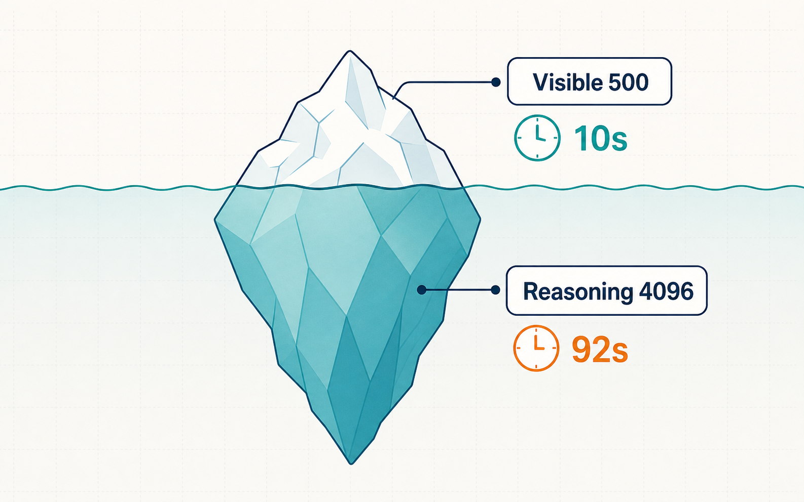
AIサービスには5つの予算がある
技術項目は、意思決定の「箱」に整理できます。
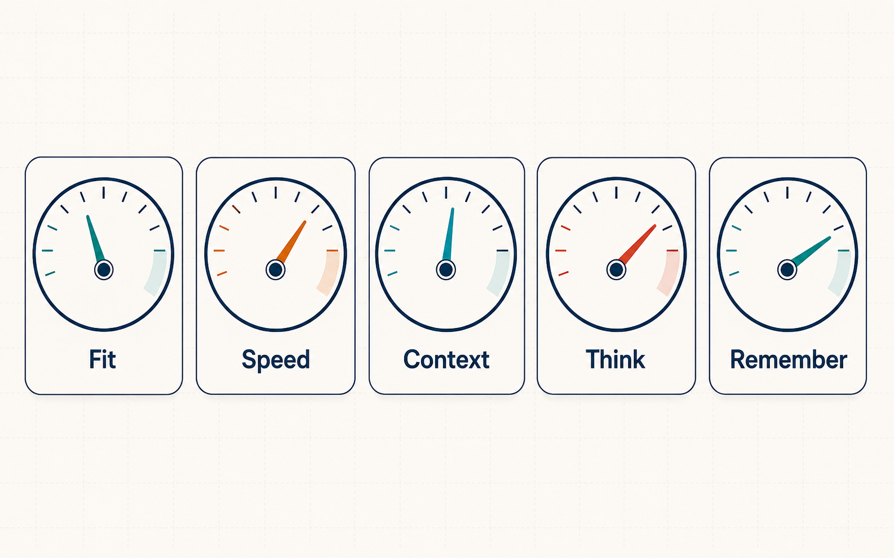
| 経営上の質問 | 技術指標 | 利用者への影響 |
|---|---|---|
| 載るか？（Fit） | VRAM 容量 | そもそも使えるか |
| 速いか？（Speed） | User tok/s・TTFV・帯域 | 待ち時間 |
| どれだけ渡せるか？（Context） | Application context | 精度・コスト |
| どれだけ考えさせるか？（Think） | Reasoning Effort | 品質と待ち時間の両方 |
| 覚えられるか？（Remember） | Memory Service | 継続性・統制 |
容量が大きい機械と、速い機械は違う
ハードウェアは単純な優劣ではなく、用途別のトレードオフです。
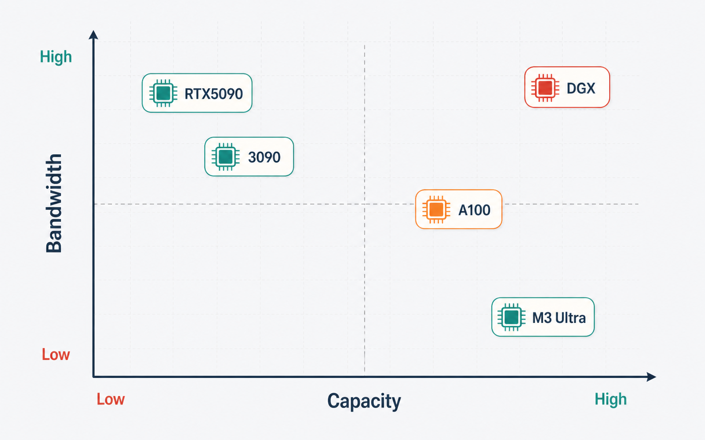
| ハードウェア | 容量 | 帯域 | 32B Q4 理論tok/s | 70B搭載 |
|---|---|---|---|---|
| RTX 5090 | 32 GB | 1,792 GB/s | 112 | × |
| RTX 3090 | 24 GB | 936 GB/s | 58.5 | × |
| A100 80GB SXM | 80 GB | 2,039 GB/s | 127 | ○ |
| DGX Spark | 128 GB | 273 GB/s | 17.1 | ○ (7.8 tok/s) |
| Mac Studio M3 Ultra | 最大512 GB | 819 GB/s | 51.2 | ○ (23.4 tok/s) |
1M Contextは、1Mの便利な記憶ではない
長いContextをストレージ代わりにすると、品質・待ち時間・KV・同時実行数すべてに跳ね返ります。
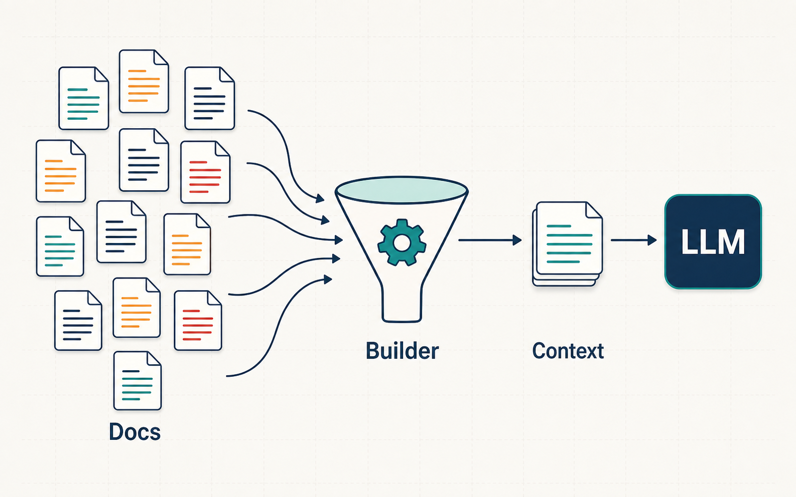
Prefill 増
応答が遅くなる
KV 増
同時実行数が減る
精度低下
context rot
課金 増
入力トークン増
概算 GLM-5.2 MLAコアで 1,048,576 Context は 1 Sequenceあたり約87.75GiB。1M を1人に出すだけでKVコアが約88GiB。
“会話を覚える”サービスの責任主体を決める
機能比較ではなく「誰が会話状態を管理するか」で見ます。
| 提供者 | 会話状態 | 長期状態 | 状態管理主体 |
|---|---|---|---|
| OpenAI | previous_response_id | Conversations API | OpenAI または自前 |
| previous_interaction_id | Interaction object | ||
| Anthropic | Messages配列を毎回送信 | Memory Tool | 原則として開発者 |
素材記載の2026年6月時点。Anthropic Messages API はステートレス。
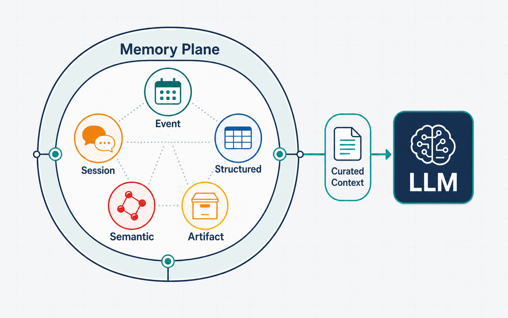
Reasoningは品質向上策であり、同時に容量消費策
ReasoningはON/OFFではなく、成功率・Token消費・待ち時間のトレードオフです。
| 公式単一例 単一例 | Reasoning | Visible | 倍率 |
|---|---|---|---|
| OpenAI | 1,024 | 約162 | 約7.3× |
| Gemini | 297 | 171 | 約2.74× |
| Effort 特定ベンチ | 成功率 | Token消費 |
|---|---|---|
| 常時Low | 35.0% | 25K |
| 常時Medium | 47.3% | 137K |
| 常時High | 54.8% | 1,007K |
| Ares動的選択 | 58.5% | 476K |
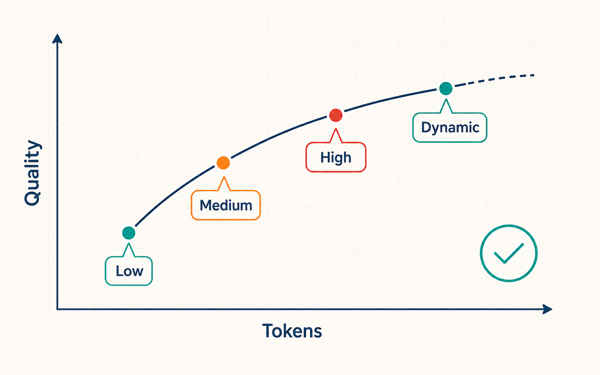
すべての問い合わせをHighで考えさせない
Reasoning Effort を、モデルルーティングと同列の運用ポリシーにします。
| タスク | Reasoning |
|---|---|
| 分類・検索 | OFF / Minimal |
| 通常チャット | Low |
| コード・資料 | Medium |
| 複雑設計 | High |
| 長時間Agent | High / xhigh |
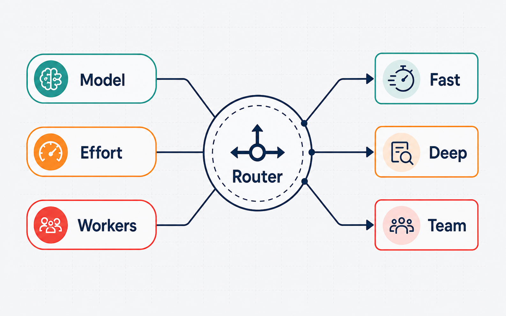
routes:
classification: { model_tier: fast, reasoning_effort: minimal }
normal_chat: { model_tier: standard, reasoning_effort: low }
code_and_documents:{ model_tier: standard, reasoning_effort: medium }
complex_design: { model_tier: strong, reasoning_effort: high }
escalation:
on_verifier_failure:
- raise_effort_one_level
- use_stronger_model
- add_specialized_workers
reasoning_effort は固定Token Budgetではなく振る舞いのシグナル。
ローカルAI採用判断は、モデルではなく運用境界で決める
ローカルAI＝「PCで動かす」ではなく、「自社環境でモデルと状態を管理する設計」です。
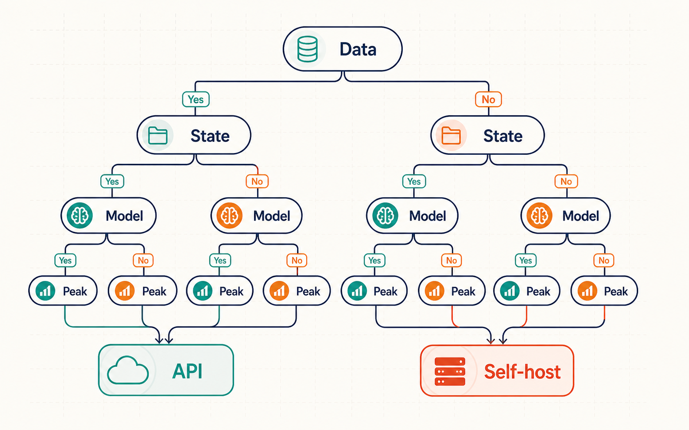
| 論点 | API中心 | Self-host中心 | 確認事項 |
|---|---|---|---|
| データ所在 | ベンダー側 | 自社境界内 | 機密区分・規制 |
| 状態の所有者 | 一部ベンダー | 自社 | 削除要求対応 |
| モデル選択 | 提供メニュー | 自由（運用責任も） | 更新頻度 |
| 運用負荷 | 低 | 高 | 人員・スキル |
| 容量計画 | ベンダー任せ | 自社で試算 | ピーク生存トークン |
| 監査 | ログ依存 | 自社設計 | 追跡可能性 |
マルチエージェントでは、Worker数が新しいコスト倍率になる
全Workerに全履歴を渡すと、コンテキストとKVが Worker数倍 に膨らみます。
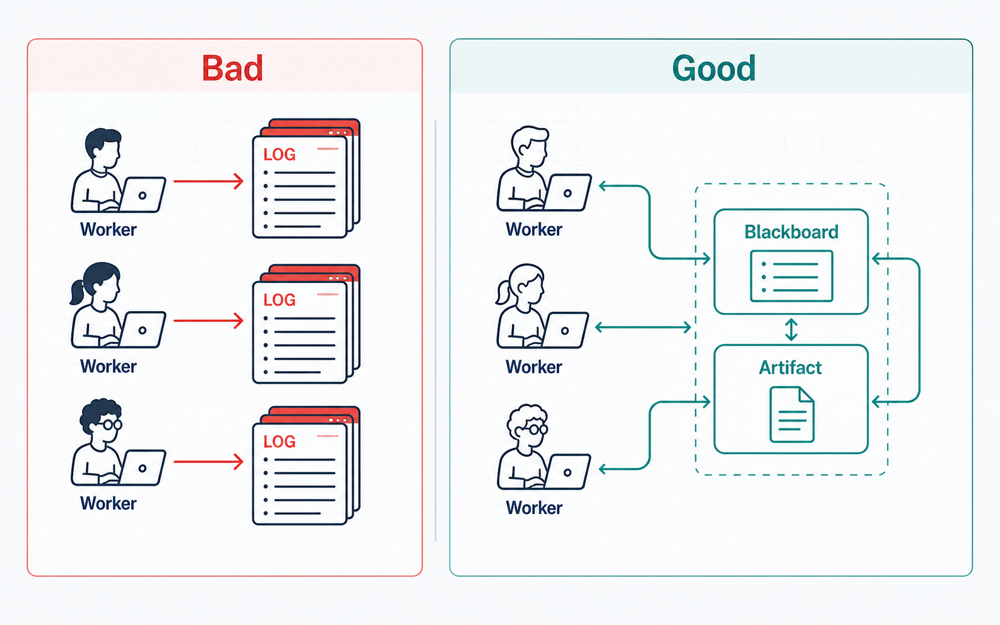
| 設計 | Context量 | KV影響 | 監査性 |
|---|---|---|---|
| 全履歴を全Workerへ | Worker数倍 | Worker数倍 | 低（重複ログ） |
| Blackboard＋Artifact | 役割分の最小限 | 抑制 | 高（構造化） |
経営ダッシュボードで見るべき指標
単純な output tokens や平均応答時間だけでは、Reasoning型サービスを評価できません。
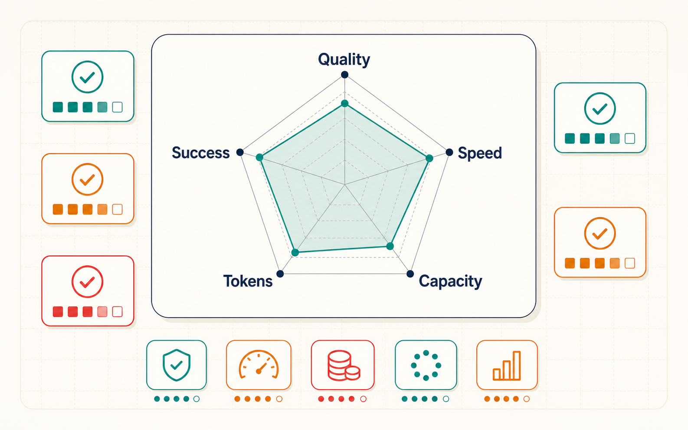
| 指標 | 何を示すか |
|---|---|
| input_tokens / reasoning_tokens / visible_output_tokens | コスト内訳（見えない生成を分離） |
| TTFT_any / TTFV | 生成開始 / 最初の回答までの体感 |
| decode_tok/s_all / visible_tok/s | 基盤性能 / 体感性能 |
| peak_KV_bytes | 同時実行の上限要因 |
| requests/sec / task_success_rate | スループット / 品質 |
1枚で決めるAIワークロード配置表
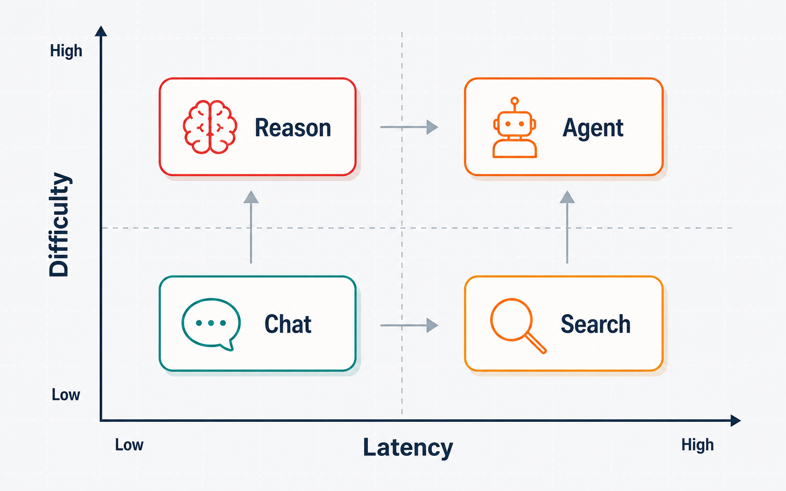
Fast model / Low Effort / 同期
Strong model / Medium / Prompt Cache
バッチ処理 / 低コストTier
High/xhigh / 複数Worker / 非同期
下部の確認欄：容量・帯域・Context・Memory・Effort の5点をチェックしてから配置を確定。
技術付録：判断の根拠となる数式と全数値
主要な数式
# 重み容量 Weight GB ≒ Params[B] × bits ÷ 8 # KV KV bytes/token = 2 × L × Hkv × Dh × dtype_bytes # 同時数 最大Sequence ≒ (VRAM − Weight − Reserve) ÷ (KV/token × 平均長) # tok/s Roofline tok/s上限 ≈ 帯域 ÷ (Weight + KV読取) # Reasoning 時間 Completion ≈ Queue + Prefill + (Reasoning + Visible) ÷ tok/s + Tool
ハードウェア全表 ／ 理論tok/s
| HW | 容量 | 帯域 | 8B Q4 | 32B Q4 | 70B Q4 |
|---|---|---|---|---|---|
| RTX 5090 | 32GB | 1,792 | 448 | 112 | — |
| RTX 3090 | 24GB | 936 | 234 | 58.5 | — |
| A100 80GB SXM | 80GB | 2,039 | 510 | 127 | 58.3 |
| DGX Spark | 128GB | 273 | 68.3 | 17.1 | 7.8 |
| M3 Ultra | 512GB | 819 | 205 | 51.2 | 23.4 |
理論値 Dense・Batch1・Q4・KV無視の帯域上限。
Qwen3-32B KV ／ GLM-5.2 MLA
| Qwen3-32B | BF16 KV | FP8 KV | GLM-5.2 MLA | 概算 |
|---|---|---|---|---|
| 8K | 2 GiB | 1 GiB | 32K | 2.74 GiB |
| 32K | 8 GiB | 4 GiB | 128K | 10.97 GiB |
| 40K | 10 GiB | 5 GiB | 1M | 87.75 GiB |